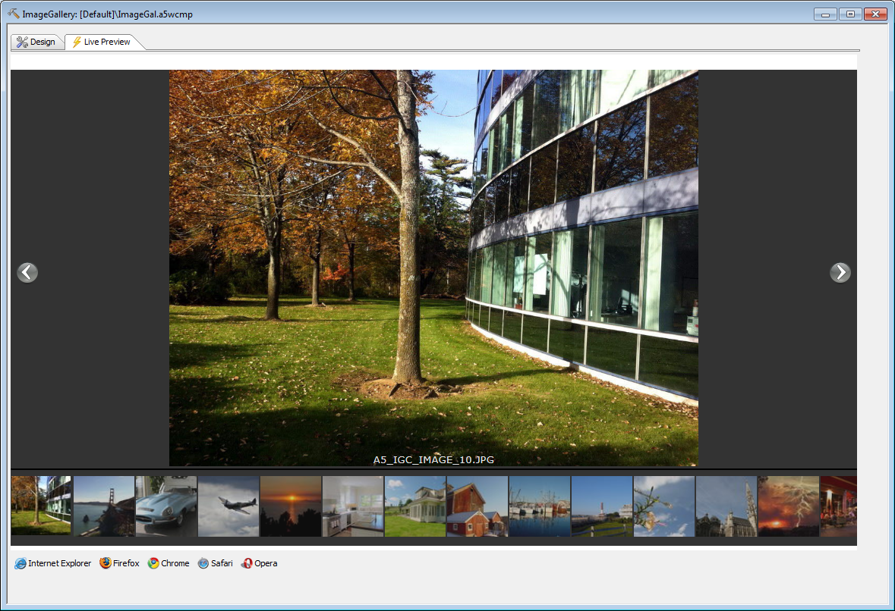

Image Gallery Component
Optional feature pack, included in subscriptionTable of contents
Introduction
The Image Gallery is a powerful component for displaying JPEG and PNG images in a Web or Mobile application.The image gallery component will scan a thumbnail directory (the thumbs sub-directory) that is contained within a specified image directory and automatically create a single page image gallery that supports both mobile and desktop browsers. It automatically detects the browser and adjusts to exploit the capabilities of the target device/browser.
The image directory may be bound to an argument in a parent grid component. The image directory must be under the web root, or it will not be displayed.
Thumbnails should be sized at 75px x 75px and images should be sized at 1024px x 768px for optimal display on the iPad.
If the image contains exif information, the exif information may be displayed, and should the exif data contain GPS information, then a Google map may be displayed denoting the image location.
The exif information is retrieved through the open source ImageMagick identify.exe program which therefore must be installed on your development machine (for it to work in LivePreview) and on the web server. If you simply run the standard install for ImageMagick, your path will be modified to include access to the required file(s). See www.imagemagick.org

Setting Image Gallery Properties
Image Gallery Options
| Property Name | Description |
|---|---|
| Default image directory | This value is normally bound by an argument to a field in an Alpha Five data driven component. The default value is typically only used for testing. |
| Image directory sort criteria | Specifies the sort order for the image directory. 6 options. The date used is the file date, not the image date from the exif data. |
| Default filter | A file filter that can be applied to the file names in the image directory, such as *.jpg or LivingRoom*.jpg. This can also be bound to an argument or set from JavaScript. |
| Limit the number of images displayed | Check this to limit the number of images displayed to the value in the next property. |
| Maximum images to display | Image count threshold. This limits the number of thumbnails/images displayed in the gallery. Example, if set to 32 and the directory contains 100 images, only the first 32 will be displayed. Minimum value is 2. Only displayed and honored if the previous property is checked. |
| Background color | Select a light or dark background for the image gallery. |
| Display slideshow button | Show the slideshow control. Allows the user to switch on a slideshow. |
| Slideshow delay | Set the time delay in milliseconds between slide transitions, default is 5000. Minimum is 3000. Maximum is 15000. |
| Display image filename | Display the image filename, within the image footer, center justified. |
| Display formatted EXIF information | Show the EXIF data (if available) contained in the jpg file. The EXIF data will follow the image description, if displayed. |
| Display Text to speech button for supported browsers | Display a Play button that converts the Info Panel text to speech. Only displays in supported Webkit browsers. |
| Display Google Map and image marker | Show a Google Map on the flip side of the Info Panel if the photo has lat/lon data. |
| Display image description in Info Panel | Show the description within the info panel, if available. The description field requires binding to a database table. The directory name and the image name are the primary keys. The field data may contain HTML markup. |
Data Binding - 'Images table : image description'
| Property Name | Description |
|---|---|
| Database type | Specify the table type for the images table. |
| Connection string | Specify the connection string for the SQL images table. |
| Table name | Specify the table name for the images table. |
| Field map | Specify the field mapping, if required. |
Arguments
- image_dir
- The image directory to display
- filter
- A comma delimited file filter string, which supports the * and ? wildcard characters. For example:
img_house.jpg,img_bathroom_*.jpg,img_kitchen_*.jpg
This filter will select all of the .jpg files that start with 'img_bathroom_' or 'img_kitchen_' as well as the image called 'img_house.jpg'.
The default value for the filter is blank. If a blank filter is supplied, then all of the images in the specified folder are shown.
When you use Action Javascript to open an Image Gallery, you will be able to specify a value for the Filter argument.
The ability to specify a filter argument, combined with the ability to bind the filter at runtime to the result of an arbitrary Javascript function, is extremely powerful, and gives you great flexibility in controlling exactly which images are shown in the Image Gallery.
Server-side Events
onComponentInitializeonComponentExecute
Client-side Events
canAjaxCallbackafterAjaxCallbackComplete
onInitializeComplete
Methods
The object name is {component.object}_a5_iGallery.The only public method of the object is resize_iGallery(), which forces the gallery to resize, and is useful when the container resizes.
Automatically sizing images
The following batch (.bat or .cmd) file can automatically resize JPEG and PNG images and create thumbnails, assuming ImageMagick is installed.@echo off if not exist thumbs md thumbs echo Resizing jpg files mogrify -resize 1024x768 -quality 75 *.jpg echo Generating jpg thumbs mogrify -format jpg -path thumbs -define jpeg:size=150x150 -auto-orient -thumbnail 75x75 -gravity center -extent 75x75 *.jpg echo Resizing png files mogrify -resize 1024x768 -quality 75 *.png echo Generating png thumbs mogrify -format png -path thumbs -auto-orient -thumbnail 75x75 -gravity center -extent 75x75 *.png echo Process complete.
Additional Notes (added by Steve Wood)
- You must create a folder named �thumbs� under the folder that contains the images you wish to display.
- The name of each thumb image must be exactly the same as corresponding image in the parent folder.
- Create this image and thumbs folder structure BEFORE you create a new Image Gallery component. You cannot enter this folder in the Default Images Directory property unless this folder, including the thumbs subfolder, already exists in your project folder � otherwise it will generate a Javascript error.
- Whenever you create or re-open an existing Image Gallery component, Alpha will automatically copy in all of the A5 demo images into your project.
- The data binding is used only to provide a text Description to an image. If an image folder + image name is found in the table along with a description, the description will appear in the Info panel.
Videos about the Image Gallery
In this video, Selwyn Rabins shows how easy it is to get started with the Image Gallery Component.Watch Video
In this video, Bob Moore explains the goals of the Image Gallery and demonstrates it on an iPad.
Flash player not available.
Bob Moore's introduction to the Image Gallery
Flash player not available.
Bob Moore's demonstration of the Image Gallery running in a Tabbed User Interface
Flash player not available.
Bob Moore's long tutorial on the Image Gallery called from a Grid running in a Tabbed User Interface
Flash player not available.
Bob Moore explains using the image gallery filter argument:
Flash player not available.